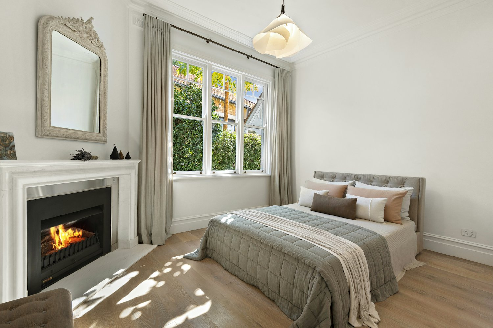

Tagliato e cucito a mano a San Cassiano, solo dopo il tuo ordine. Anche per i letti rotondi, le cuccette delle barche e i materassi che nessun negozio sa vestire.
Forma, misure del materasso, tessuto e colore: la scheda d'ordine esce già pronta per il laboratorio, e chi compra vede esattamente cosa riceverà.
Colore: · uno di oltre 600
Il vostro annuncio chiede qualcuno che affianchi l'E-commerce Manager con il passo di un'agenzia: catalogo, pubblicità, newsletter e numeri. Ecco come lavoreremmo, un pezzo alla volta.